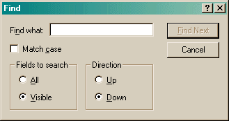

The Find Dialog allows you to locate various items in the current view. (Find is currently not supported in the Points view or the Calendar view, though it is supported in the Calendar List.)
In addition, a variant of this dialog is used to search for items in the Club, Judge and Location information. If any items are found, they will all be displayed in a list.
The Find options are remembered independently for each view, but only for the duration of the program. When you close the program and re-start it, all the Find options will be reset to their defaults.

Most of the fields should be fairly obvious as to their use. The Field to search item is used to limit the search to only fields that are visible "Visible" will limit the search to what you can see on the screen. "All" will search the following fields:
| Item currently selected | Fields |
| Dog |
|
| Trial |
|
| Run |
|
| Calendar |
|
| Training Log |
|